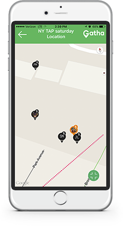

12 Soldiers with the Texas Army National Guard move through flooded Houston streets as floodwaters from Hurricane Harvey continue to rise, Monday, August 28, 2017. More than 12,000 members of the Texas National Guard have been called out to support local authorities in response to the storm. (Courtesy Photo National Guard Bureau U.S. Army photo by 1st Lt. Zachary West) |  |
Quick Set-Up Instructions
Create an account using your mobile device Share your location and allow notifications Update your profile picture using one of the free graphics below {Link to instructions}
| Rescuers | Victims |
If you have trouble downloading these images, just snap any photo with your phone. Red Profile picture = I’m coming to help White Profile picture = I need help
| Rescuers - I’m coming to help | Victims - I need help |
Once you have your profile setup, follow this link link https://goo.gl/Hww7wf to join the “Houston Flood Relief” Gathering. Make sure to share your location - after all, that’s the point. Then just touch View Full Map to see the real time activity near you.
Red Cross Flood Safety Tips
Flooding continues to be an issue in areas affected by Harvey. If you must drive and encounter a flooded roadway while driving, turn around and go another way. Additional tips:
- If you are caught on a flooded road and waters are rising rapidly around you, get out of the car quickly and move to higher ground. Most cars can be swept away by less than two feet of moving water.
- Head for higher ground and stay there.
- Stay away from floodwaters. If you come upon a flowing stream where water is above your ankles, stop, turn around and go another way.
- Keep children out of the water.
- Be especially cautious at night when it’s harder to see flood danger.
- Continue listening to local area radio, NOAA radio or TV stations for the latest information and updates.
- If your neighborhood is prone to flooding, be prepared to evacuate quickly if necessary.
- Follow evacuation orders and do not attempt to return until officials say it is safe to do so.
(pop up box? ) Instructions to download the images
- Touch and hold the image, then select “save”
- Touch the menu bar in the top left corner to see your profile page
- Touch “View Profile”
- Touch “Edit” in the top right corner
- Tap to change the photo
- Give the app permission to use your photos
- Choose “Gallery”
- Select the image you’d like to use
- Touch “Choose”
- Touch “Save changes”